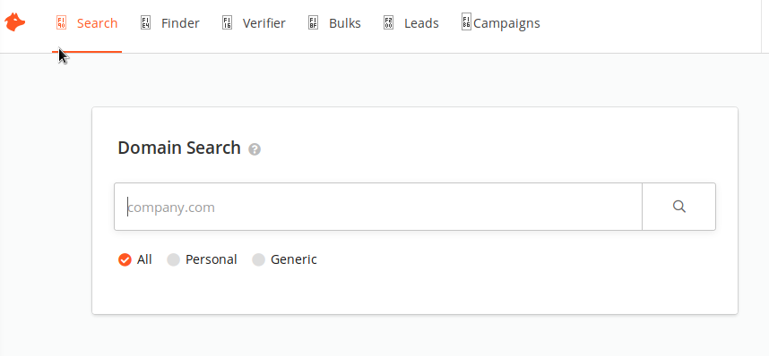

Using hunter.io
Free program gives 12 domains per month
1828257@kiit.ac.in : Sofo{

Here we can search for the domain name
1- It gives the list of people working n Organization with names, Posts, Email Address and some times Mobile number